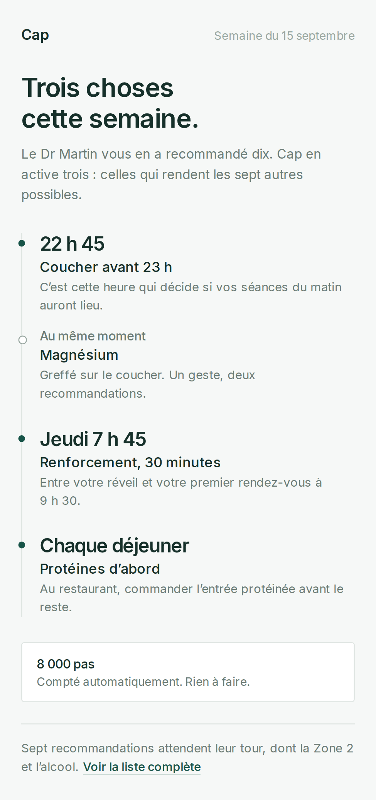
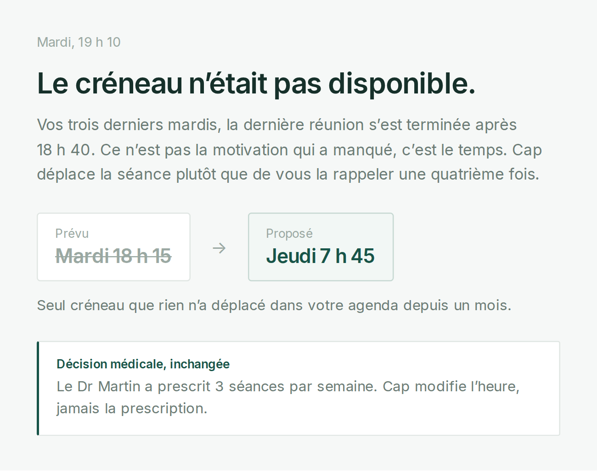
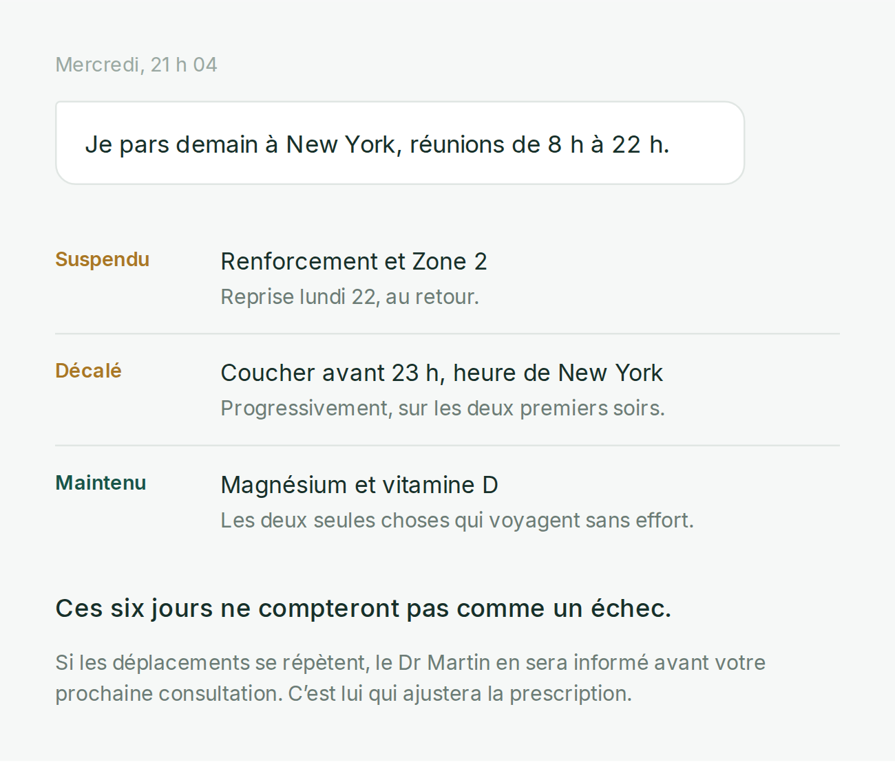

Dix recommandations médicales produisent dix intentions concurrentes, alors que la capacité de changement d’une personne reste limitée. Cap décide quoi rendre faisable maintenant, apprend pourquoi une action n’a pas eu lieu, et adapte les conditions d’exécution sans jamais toucher à la prescription.
Trois actions activées sur dix. Le coucher parce qu’il conditionne les séances du matin, le magnésium parce qu’il se greffe sur ce même geste, une seule séance de renforcement au lieu de trois. Les pas sont comptés sans rien demander. Les sept recommandations restantes restent visibles, en attente.

Trois mardis de suite, la dernière réunion s’est terminée après 18 h 40. Cap ne renvoie pas un quatrième rappel : il en conclut que le créneau n’a jamais été disponible et le déplace. La prescription du médecin, elle, ne bouge pas.

Une phrase suffit. Cap ne reprogramme pas le plan à l’identique, il le renégocie : il suspend ce qui est impossible, décale ce qui peut l’être, maintient ce qui voyage sans effort, et le dit explicitement pour que la semaine ne soit pas vécue comme un échec.

La règle qui gouverne tout le système : Cap peut modifier le plan d’exécution, jamais l’intention médicale. Toute ambiguïté clinique remonte au médecin référent.